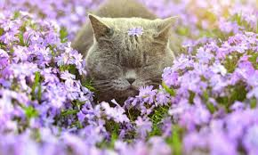
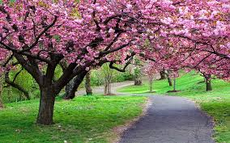

Сині проліски привітно
Зводять вінчики малі.
І хоч, може буде влітку
Більше квітів запашних,
Та для нас найперша квітка
Наймиліша від усіх.
Завжди ми її помітим,
З лісу в дім принесемо.
І тому цей місяць Квітнем
По заслузі ми звемо.